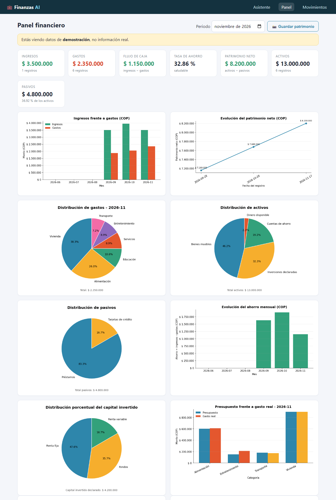
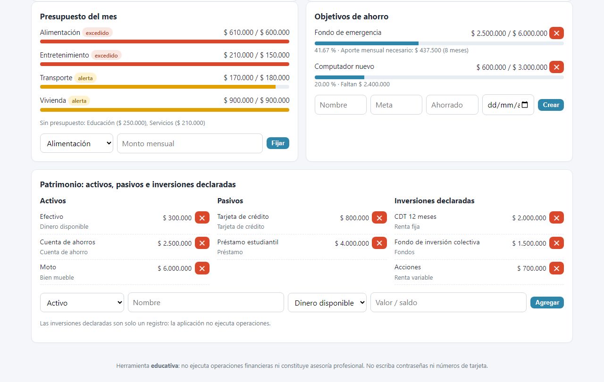
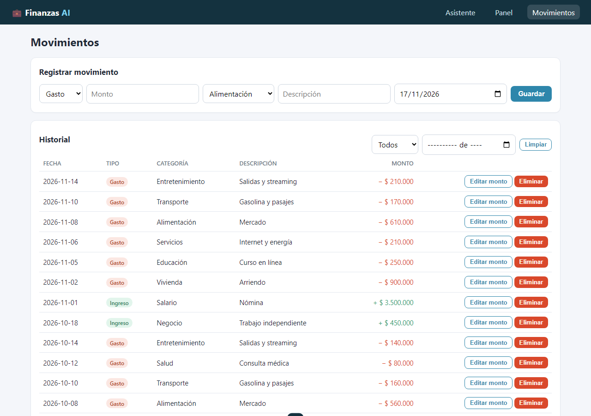
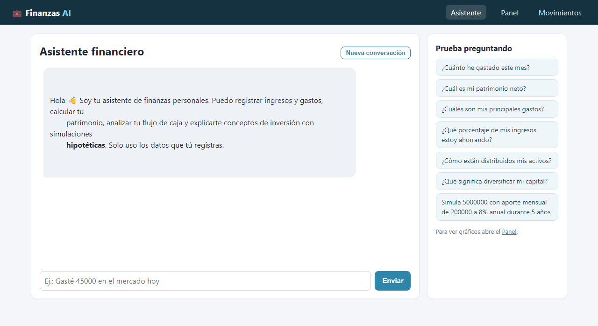

Programa de Ingeniería de Sistemas Facultad de Ingeniería Neiva, Huila, Colombia
Agente inteligente de finanzas personales basado en modelos de lenguaje y uso de herramientas
Diseño, implementación y validación de un asistente educativo con interfaz de consola, panel web y API REST
Parcial práctico – Tercer corte (30 %)
Asignatura: Electiva – Aplicaciones con Inteligencia Artificial
Semestre: 2026-2
Docente: José Miguel Llanos Mosquera
Integrantes
[[INTEGRANTES_PORTADA]]
Sustentación: 18 de noviembre de 2026 · Salón C-411, Sede Prado Alto Neiva, noviembre de 2026
Agente inteligente de finanzas personales basado en modelos de lenguaje y uso de herramientas
[[AUTORES_ARTICULO]]
Resumen—Este artículo presenta el diseño, la implementación y la validación de Finanzas AI, un agente inteligente educativo que ayuda a una persona a registrar ingresos y gastos, calcular su patrimonio neto, analizar su flujo de caja, administrar presupuestos y objetivos de ahorro y estudiar la diversificación del capital mediante escenarios hipotéticos. El sistema adopta una arquitectura de cinco capas (interfaces, núcleo del agente, herramientas, lógica de negocio y almacenamiento/visualización) en la que un modelo de lenguaje configurable (Gemini, Groq, Ollama o Claude, mediante un adaptador compatible con la API de OpenAI) se limita a interpretar la intención del usuario y a seleccionar herramientas, mientras que todos los cálculos se ejecutan en funciones deterministas con aritmética decimal. El agente se ofrece por consola, por un panel web en Flask y por una API REST. La solución incorpora salvaguardas de seguridad: confirmación explícita antes de modificar o eliminar datos, rechazo de datos bancarios sensibles, copias de seguridad automáticas y advertencias de riesgo en toda salida de inversión. La validación incluyó 89 pruebas automatizadas, todas aprobadas, y pruebas funcionales en consola y web con datos de demostración, incluida una validación con un modelo real (Gemini 3.5 Flash-Lite, capa gratuita) cuyas cifras coincidieron con un cálculo independiente. Se discuten las limitaciones, entre ellas que la calidad de la selección de herramientas depende del modelo elegido, en especial si es pequeño o local, y que el sistema no constituye asesoría financiera.
Términos de indexación—agente inteligente, finanzas personales, modelos de lenguaje, uso de herramientas, Flask, Python, aritmética decimal, API REST.
I. Introducción
La administración de las finanzas personales exige registrar movimientos, clasificar gastos, conocer el patrimonio y tomar decisiones de ahorro e inversión con información incompleta. La literatura muestra que la alfabetización financiera está asociada con una mejor planificación y acumulación de riqueza [1], y que persisten brechas importantes de conocimiento entre los adultos de distintos países [2]. Una herramienta que traduzca preguntas cotidianas en cálculos verificables puede reducir la barrera de entrada a prácticas financieras sanas.
Los avances recientes en modelos de lenguaje de gran tamaño (LLM) permiten construir agentes que perciben una solicitud en lenguaje natural, razonan sobre ella y actúan sobre el entorno invocando herramientas [3]–[5]. Según el material de la asignatura [6] y la definición clásica de Russell y Norvig [7], un agente inteligente percibe su entorno mediante sensores, procesa la información y actúa mediante actuadores para alcanzar objetivos. Este trabajo materializa esa definición en un dominio concreto: la entrada del usuario y los datos registrados son la percepción, el LLM junto con las funciones financieras constituyen el procesamiento, y las herramientas que leen y escriben el almacenamiento son los actuadores.
Un riesgo conocido de los LLM es que pueden producir cifras plausibles pero inventadas. En finanzas personales esto es inaceptable. Por ello el proyecto separa de forma estricta la lógica del modelo de la lógica financiera: el modelo nunca calcula ni recuerda datos monetarios, solo decide qué herramienta invocar y explica sus resultados. El resto del artículo describe los objetivos (Sección II), el marco teórico (III), el desarrollo paso a paso (IV), los resultados con capturas de pantalla (V), una discusión de limitaciones (VI) y las conclusiones (VII).
II. Objetivos
A. Objetivo general
Desarrollar en Python 3 un agente inteligente de finanzas personales con enfoque educativo, basado en el patrón de uso de herramientas sobre un modelo de lenguaje configurable, que funcione por consola, web y API REST y cuyos resultados puedan auditarse.
B. Objetivos específicos
Definir el tema y el alcance del agente y adaptar la arquitectura de cinco capas del ejemplo proporcionado en clase.
Implementar las funciones financieras (ingresos, gastos, flujo de caja, patrimonio, presupuesto, distribución de activos y simulación) con aritmética decimal.
Construir cuatro herramientas con esquemas JSON y conectarlas a un Agent Loop independiente del proveedor, con modelos gratuitos (Gemini, Groq, Ollama) o de pago (Claude).
Ofrecer interfaces de consola, panel web con gráficos y API REST sobre el mismo núcleo.
Incorporar salvaguardas de seguridad y responsabilidad financiera.
Verificar el funcionamiento mediante pruebas automatizadas y funcionales en consola y web.
III. Marco teórico
A. Agentes inteligentes
Se distinguen cuatro tipos básicos: reactivos simples, basados en modelos, basados en objetivos y basados en utilidad [6], [7]. Finanzas AI es un agente basado en objetivos, pues el usuario declara metas (por ejemplo, un fondo de emergencia) y el sistema calcula el avance y el aporte mensual necesario, con rasgos de agente basado en modelos porque mantiene un estado interno persistente: movimientos, activos, pasivos, presupuestos e historial. Los enfoques con LLM intercalan razonamiento y acción [3] y permiten que el modelo aprenda a emplear herramientas externas [4].
B. Uso de herramientas (tool use) y Agent Loop
En el patrón de uso de herramientas, la aplicación describe al modelo un conjunto de funciones con un esquema JSON; el modelo responde, cuando lo considera necesario, con un bloque tool_use que indica el nombre y los argumentos; la aplicación ejecuta la función y devuelve un tool_result, y el ciclo se repite hasta que el modelo emite una respuesta final [8]. Anthropic recomienda preferir flujos simples y componibles, y diseñar con cuidado la interfaz de las herramientas [5]. El cliente oficial de Python simplifica la comunicación con la API [9].
C. Aritmética monetaria
Los números de punto flotante binario no representan exactamente muchas fracciones decimales, de modo que sumas simples pueden acumular errores de redondeo [10], [11]. Por esa razón se emplea el tipo Decimal de Python [12], que realiza aritmética decimal con precisión controlada, y los montos se persisten como cadenas.
D. Diversificación
La teoría moderna de portafolios formalizó que repartir el capital entre activos con comportamientos distintos reduce el riesgo del conjunto sin necesariamente reducir el rendimiento esperado en la misma proporción [13]. El módulo de inversión del agente utiliza este concepto de forma estrictamente educativa, mediante la distribución porcentual y alertas de concentración.
E. Interfaces web y API
El panel utiliza Flask, un microframework WSGI para Python [14]. La API sigue el estilo arquitectónico REST, con recursos identificados por URL y métodos HTTP estándar [15]. Los gráficos se generan con Matplotlib [16].
IV. Desarrollo
El proyecto se desarrolló con la asistencia de Claude Code [17] en ocho etapas sucesivas. Cada etapa se verificó antes de continuar con la siguiente.
A. Etapa 1: definición del tema, alcance y arquitectura
El tema elegido es el asesor y asistente de finanzas personales. El alcance incluye registrar y clasificar ingresos y gastos, calcular patrimonio neto, analizar flujo de caja, definir presupuestos y objetivos de ahorro, estudiar la diversificación y generar informes y gráficos. Quedan fuera del alcance ejecutar operaciones financieras, gestionar credenciales o datos bancarios y emitir recomendaciones de inversión definitivas. A partir del diagrama de referencia del profesor (un agente de tareas con cuatro herramientas) se conservaron las cinco capas y se adaptó cada componente (Fig. 1 y Tabla I).
Fig. 1. Arquitectura de cinco capas de Finanzas AI, adaptada del diagrama de referencia del curso.
TABLA IAdaptación de la arquitectura de referencia
Capa
Ejemplo (tareas)
Agente de finanzas
1
CLI, Flask, API
main.py, app.py, API /api/*
2
Agent Loop
agent.py, modelo por .env
3
4 herramientas de tareas
4 herramientas financieras
4
functions.py
functions.py con Decimal
5
tareas.json, charts.py
finanzas.json, storage.py, charts.py
B. Etapa 2: lógica financiera (Capa 4)
El archivo functions.py concentra toda la lógica como funciones puras que reciben datos, validan, calculan con Decimal y devuelven estructuras serializables. Se implementaron las once funciones requeridas (Tabla II) y otras de apoyo: gastos por categoría, gastos recurrentes, capacidad de ahorro, progreso de objetivos y simulación. Los montos se validan (positivos, finitos, con tope máximo), las fechas y periodos se normalizan y las categorías se aceptan sin distinguir tildes ni mayúsculas.
TABLA IIFunciones principales de la Capa 4
Función
Resultado
calculate_total_income / expenses
Total y número de registros
calculate_cash_flow
Ingresos − gastos del periodo
calculate_savings_rate
(Ingresos − gastos) / ingresos × 100 y estado
calculate_net_worth
Activos − pasivos; razón deuda/activos
calculate_asset / liability_distribution
Porcentaje por tipo
calculate_budget_execution
Gastado, restante y estado (ok/alerta/excedido)
calculate_monthly_variation
Comparación entre dos periodos
calculate_investment_allocation
Distribución y alertas de concentración
generate_financial_report
Informe integral del periodo
La simulación de inversión aplica capitalización mensual con la tasa efectiva equivalente rm = (1 + r)1/12 − 1 y recursión Sk = Sk−1(1 + rm) + A, donde A es el aporte mensual. El valor real descuenta la inflación anual supuesta. El resultado siempre se rotula como hipotético, ya que la tasa es un supuesto del usuario.
C. Etapa 3: herramientas del agente (Capa 3)
Cada herramienta es un módulo con un esquema JSON y una función run(store, params). Se agrupan acciones relacionadas en una sola herramienta (Tabla III) para mantener pequeño el conjunto que ve el modelo. El despachador execute_tool captura los errores de validación y los devuelve al modelo como resultados de error, de modo que el ciclo nunca se interrumpe.
TABLA IIIHerramientas y acciones
Herramienta
Acciones
manage_transaction
add, list, update*, delete*
calculate_net_worth
calculate, list, add_asset, add_liability, update_item*, remove_item*, snapshot, history
explain, add/list/update*/remove* de inversiones declaradas, allocation, simulate, compare_scenarios
* Requieren confirm=true, enviado solo tras la autorización explícita del usuario.
A modo de ejemplo, el esquema que recibe el modelo para la primera herramienta tiene la forma siguiente (resumido):
{ "name": "manage_transaction",
"description": "Gestiona movimientos ... Para
update y delete primero se muestra el detalle;
solo tras la autorización se repite con
confirm=true. Nunca inventes montos.",
"input_schema": { "type": "object",
"properties": {
"action": {"enum": ["add","list","update","delete"]},
"type": {"enum": ["income","expense"]},
"amount": {"type": "number"},
"category": {"type": "string"},
"date": {"type": "string"},
"transaction_id": {"type": "string"},
"confirm": {"type": "boolean"} },
"required": ["action"] } }
Las inversiones declaradas son un registro y se suman al patrimonio como parte de los activos; esto evita el doble conteo y respeta que el sistema no ejecuta operaciones. Cada resultado incluye data_used y, cuando aplica, la fórmula, para que el usuario revise los datos que sustentan una cifra.
D. Etapa 4: núcleo inteligente (Capa 2)
La clase FinanceAgent implementa el Agent Loop (Fig. 2). Mantiene el historial de la conversación, llama a messages.create con las definiciones de herramientas y, mientras la parada sea tool_use, ejecuta cada herramienta y agrega los tool_result. El número de iteraciones está acotado y, si se agota, se pide al modelo un cierre sin herramientas. Si la API falla, el historial se revierte al punto previo para no dejar pares tool_use/tool_result incompletos. El recorte del historial siempre inicia en un mensaje de usuario con texto.
El prompt de sistema fija las reglas: consultar siempre las herramientas antes de dar cifras, preguntar cuando falte un dato, distinguir datos registrados de estimaciones, pedir autorización antes de modificar o eliminar, no pedir credenciales, no garantizar rentabilidades y aclarar que la información es educativa. El proveedor y el modelo se eligen en .env (FINANZAS_PROVIDER y FINANZAS_MODEL).
Para no depender de una clave de pago se añadió el módulo llm.py, un adaptador que expone la misma interfaz mínima del cliente de Anthropic y traduce las herramientas y los mensajes al formato de la API compatible con OpenAI, que ofrecen Gemini [18], Groq y Ollama. Así el Agent Loop y las herramientas son idénticos para cualquier proveedor. Los modelos pequeños o locales pueden elegir peor las herramientas que un modelo grande, por lo que las salvaguardas se aplican en las herramientas y no solo en el prompt. Al probar con un modelo real se descubrió que Gemini exige devolver, en el historial, la firma de razonamiento (thought signature) de cada llamada a herramienta; de lo contrario responde con un error 400. El adaptador la conserva sin cambios y, además, reintenta con esperas crecientes ante errores temporales (429 y 5xx). El prompt pide respuestas en texto plano para que se vean bien en consola y web.
Fig. 2. Secuencia del Agent Loop: el modelo solo decide la herramienta; el cálculo ocurre en funciones deterministas.
E. Etapa 5: interfaz de consola
main.py abre una conversación en terminal. Además del chat en lenguaje natural ofrece comandos que no consumen el modelo: /resumen, /patrimonio, /graficos, /datos, /reset y /salir. Si falta la configuración del modelo (por ejemplo, la clave del proveedor) informa qué falta y mantiene operativos los comandos. Con la opción --show-tools muestra qué herramientas usó el agente, lo que aporta transparencia.
F. Etapa 6: panel web
El panel (app.py) incluye tres páginas: el asistente conversacional, el panel con indicadores, ocho gráficos, presupuestos, objetivos y patrimonio, y el historial de movimientos con alta, filtros, edición y eliminación con confirmación del navegador. El contenido proveniente del usuario se escapa antes de insertarse en el DOM para evitar inyección de código. El servidor escucha únicamente en 127.0.0.1.
G. Etapa 7: API REST
La API (Tabla IV) reutiliza las herramientas del agente, de modo que la validación existe en un único lugar y no se duplica. Se traducen los estados a códigos HTTP: 201 al crear, 400 por validación, 404 si el registro no existe y 502/503 si falla o no está configurado el modelo. Las peticiones PUT y DELETE se consideran acciones explícitas del usuario, por lo que envían la confirmación internamente.
TABLA IVEndpoints principales de la API
Método
Ruta
GET/POST
/api/transactions
PUT/DELETE
/api/transactions/<id>
GET/POST/PUT/DELETE
/api/assets, /api/liabilities, /api/investments
GET/POST
/api/networth, /api/networth/snapshot
GET/PUT/DELETE
/api/budgets, /api/goals
GET/POST
/api/summary, /api/report, /api/charts/<n>.png
POST
/api/investments/simulate, /api/chat
H. Etapa 8: persistencia, seguridad y pruebas
La clase DataStore valida la estructura, guarda de forma atómica (archivo temporal más reemplazo), crea una copia de seguridad antes de cada guardado conservando las últimas diez y, si el JSON se daña, restaura la copia válida más reciente. El archivo tiene la forma siguiente:
Las salvaguardas de seguridad se resumen así: (i) los datos reales no se versionan (.gitignore); (ii) se rechazan textos con apariencia de número de tarjeta (13 a 19 dígitos); (iii) la modificación y eliminación exigen confirmación; (iv) las simulaciones se marcan como hipotéticas y se acompañan de advertencias sobre riesgo, comisiones, inflación y pérdida de capital; y (v) el modelo recibe la instrucción de no ejecutar operaciones ni solicitar credenciales. Los datos ficticios de demostración se almacenan en un archivo separado y el panel muestra un aviso cuando se usan.
I. Instalación y ejecución
El proyecto requiere Python 3.12 o compatible. Los pasos en Windows (PowerShell) son los siguientes:
Para probar con datos ficticios se ejecuta python scripts/load_demo.py y se define FINANZAS_DATA_PATH=data/finanzas_demo.json. El archivo .env no se versiona y el modelo puede cambiarse con FINANZAS_MODEL.
V. Resultados
A. Pruebas automatizadas
Se escribieron 89 pruebas con pytest [19] (Tabla V), todas aprobadas en 4,39 s (Fig. 3). Cubren la aritmética decimal (por ejemplo, 0,1 + 0,2 = 0,30 exacto), los casos límite (montos negativos, no numéricos, fechas inválidas, números de tarjeta), las confirmaciones, la persistencia, la recuperación ante un archivo dañado, el Agent Loop con un cliente simulado (sin consumir la API), el adaptador de proveedores (con un servidor simulado), la API REST y la generación de los ocho gráficos.
TABLA VPruebas automatizadas por módulo
Archivo
Cubre
Pruebas
test_functions.py
Cálculos, validaciones, simulación
28
test_tools.py
Herramientas, confirmaciones, backups
25
test_agent.py
Agent Loop, contexto, errores
10
test_api.py
API, páginas, gráficos, demo
10
test_llm.py
Adaptador de proveedores, reintentos, firma de Gemini
Fig. 3. Resultado de la ejecución de las pruebas automatizadas (salida real de la terminal).
B. Pruebas funcionales en consola
Se ejecutó la CLI con datos de demostración (Fig. 4). Los comandos /resumen y /patrimonio devolvieron cifras idénticas a las del panel web y a las calculadas manualmente (Tabla VI). Si el modelo no está configurado, el chat responde con un mensaje de configuración y no se interrumpe el programa.
$ python main.py
==============================================================
Agente Inteligente de Finanzas Personales (modo educativo)
Escriba su consulta en lenguaje natural. /ayuda para ver comandos
==============================================================
Modelo: gemini-3.5-flash-lite (proveedor: gemini)
Tú > /resumen
Resumen 2026-11
Ingresos : $ 3.500.000,00
Gastos : $ 2.350.000,00
Flujo : $ 1.150.000,00
Ahorro : 32.86 %
Tú > /patrimonio
Activos : $ 13.000.000,00
Pasivos : $ 4.800.000,00
Patrimonio neto: $ 8.200.000,00
Tú > /datos
Datos: data\finanzas_demo.json
Copias de seguridad: data\backups
Tú > /salir
Hasta pronto.
Fig. 4. Sesión de la CLI con datos de demostración (salida real de la terminal).
TABLA VIVerificación manual de cálculos (datos de demostración, nov. 2026)
Indicador
Cálculo manual
Sistema
Gastos del mes
0,9 + 0,21 + 0,61 + 0,17 + 0,21 + 0,25 M
$2.350.000
Flujo de caja
3.500.000 − 2.350.000
$1.150.000
Tasa de ahorro
1.150.000 / 3.500.000
32,86 %
Activos totales
8,8 M + 4,2 M inversiones
$13.000.000
Patrimonio neto
13.000.000 − 4.800.000
$8.200.000
Deuda / activos
4.800.000 / 13.000.000
36,92 %
Simulación 10 %, 2 años
1.000.000 × 1,10²
$1.210.000
C. Pruebas funcionales en web
Se abrió el panel en el navegador con los datos de demostración (Fig. 5–8). El panel muestra siete indicadores, ocho gráficos, la ejecución del presupuesto (alimentación y entretenimiento aparecen como excedido, transporte y vivienda como alerta), el avance de los objetivos y el patrimonio. La consola del navegador no registró errores y la vista se adapta a pantallas estrechas.

Fig. 5. Panel financiero: indicadores y gráficos (datos de demostración).

Fig. 6. Panel financiero: presupuesto, objetivos de ahorro y patrimonio con formularios de alta.

Fig. 7. Página de movimientos: registro, filtros, edición y eliminación.

Fig. 8. Interfaz conversacional del asistente con consultas sugeridas.
D. Pruebas de la API REST
Se ejecutó un flujo completo contra un almacenamiento vacío (Fig. 9): creación (201), validación de montos negativos y de datos bancarios (400), actualización, eliminación y consulta de un recurso inexistente (404). Las respuestas incluyen mensajes claros y códigos de error estables.
[[EV:api]]
Fig. 9. Flujo de pruebas de la API REST (salida real; las respuestas largas se truncan).
E. Comportamiento del agente y control de autorización
La Fig. 10 muestra una traza del Agent Loop con un cliente simulado que reproduce las decisiones del modelo. La consulta de eliminación devuelve needs_confirmation y el registro permanece intacto hasta que el usuario autorice, lo que demuestra que la salvaguarda se aplica en la herramienta y no solo en el prompt.
[[EV:agent_trace]]
Fig. 10. Traza del Agent Loop con cliente simulado (sin llamada real a la API).
F. Validación con un modelo de lenguaje real
Se probó el sistema con Gemini 3.5 Flash-Lite (capa gratuita de Google) sobre una copia de los datos de demostración. La Fig. 11 muestra seis consultas hechas con el mismo Agent Loop que usan la consola y la web; la Fig. 12, una sesión real de main.py; y la Fig. 13, el punto /api/chat con contexto de conversación. En todos los casos el modelo eligió la herramienta correcta y las cifras coincidieron con el cálculo manual de la Tabla VI: gastos de $2.350.000, patrimonio neto de $8.200.000 y tasa de ahorro de 31,77 % tras registrar un almuerzo de $38.000 (gastos de $2.388.000). La simulación con $2.000.000, aporte mensual de $150.000, 8 % anual y 3 años arrojó $8.574.229,36, igual al valor obtenido con un cálculo independiente. Al pedir eliminar el almuerzo, el agente mostró el detalle y solicitó autorización sin borrar el registro (el número de movimientos quedó en 22: el almuerzo no se borró).
La validación también expuso problemas reales que se corrigieron. Primero, el modelo gemini-3.8-flash devolvió errores 503 por saturación y luego 429 porque la capa gratuita permite solo 20 solicitudes diarias por modelo, lo que motivó los reintentos y el cambio al modelo Flash-Lite, que tiene cuota propia. Segundo, los modelos Gemini actuales rechazaron el historial sin la firma de razonamiento (error 400), lo que llevó a conservarla. Tercero, las primeras respuestas incluían fórmulas en LaTeX y negritas que no se ven bien en una consola, por lo que se ajustó el prompt a texto plano.
G. Gráficos generados
Los ocho gráficos solicitados se generan con Matplotlib (Fig. 14): ingresos frente a gastos, evolución del patrimonio, distribución de gastos, de activos y de pasivos, evolución del ahorro, distribución del capital invertido y comparación de presupuestos. Todos incluyen título, ejes etiquetados y unidades monetarias; si no hay datos, muestran un mensaje en lugar de fallar, hecho comprobado en las pruebas.
[[EV:real_llm_raw]]
Fig. 11. Seis consultas al agente con Gemini 3.5 Flash-Lite (salida real de la terminal).
$ python main.py --show-tools
Modelo: gemini-3.5-flash-lite (proveedor: gemini)
Tú > ¿Cuánto dinero he recibido este mes?
· herramienta: analyze_finances summary -> ok
Asesor > Durante este mes (noviembre de 2026) has recibido un total de $3.500.000,00, según 1 registro de ingresos en el sistema.
Tú > ¿Cuál es mi patrimonio neto?
· herramienta: calculate_net_worth calculate -> ok
Asesor > Tu patrimonio neto actual es de $8.200.000,00.
Patrimonio neto = total de activos - total de pasivos
- Total de activos (efectivo, ahorros, bienes muebles e inversiones declaradas): $13.000.000,00
- Total de pasivos (tarjetas de crédito y préstamos): $4.800.000,00
Tú > /salir
Hasta pronto.
Fig. 12. Sesión real de la CLI con el modelo configurado (salida real, abreviada: sin el banner de bienvenida y con las respuestas resumidas).
[[EV:real_web_raw]]
Fig. 13. Consultas al punto /api/chat con el modelo real; la segunda reutiliza el mismo session_id (contexto).
Fig. 14. Los ocho gráficos de charts.py generados con datos de demostración.
H. Pruebas de validación y seguridad
Además de los casos de uso normales se probaron entradas inválidas y escenarios de falla (Tabla VII). En todos los casos el sistema respondió con un error controlado, sin modificar los datos almacenados y sin interrumpir el programa.
TABLA VIICasos de validación y seguridad verificados
Entrada o escenario
Resultado obtenido
Monto negativo, cero o no numérico
Error de validación (400); no se guarda nada
Descripción con número de tarjeta (16 dígitos)
Rechazo por datos bancarios sensibles
Categoría inexistente o fecha 31/12/2026
Error con las opciones o el formato válidos
Periodo 2026-13
Error 400: formato AAAA-MM
Eliminar o actualizar sin confirm
needs_confirmation; registro intacto
Cambiar un presupuesto ya definido
Solicita confirmación previa
Id inexistente
Error 404 not_found
JSON dañado con copia de seguridad
Restaura la última copia válida
JSON dañado sin copias
Error explícito; conserva copia del archivo dañado
Falla de red o API del modelo
Historial revertido; mensaje de error al usuario
Proveedor sin clave o desconocido
Mensaje de configuración (503 en la API)
Respuesta con argumentos de herramienta inválidos
Se tratan como vacíos; la herramienta responde con error de validación
Gráficos sin datos registrados
Imagen con el mensaje «Sin datos registrados»
I. Cumplimiento de los requisitos
TABLA VIIIRequisitos del parcial y evidencia
Requisito
Evidencia
Agente en Python 3 con tema y alcance definidos
Secciones IV-A y IV-B
Pasos del profesor (arquitectura de 5 capas)
Fig. 1, Tabla I
Pruebas funcionales en consola
Fig. 3, Fig. 4, Fig. 11, Fig. 12, Tabla VI
Pruebas funcionales en web
Fig. 5–9, Fig. 13
Informe con formato IEEE
Este documento
VI. Discusión y limitaciones
La separación entre el modelo y la lógica financiera permitió verificar los cálculos de forma independiente de la API: las 89 pruebas se ejecutan sin red y sin costo. Este diseño reduce el riesgo de cifras inventadas, aunque no lo elimina por completo: el modelo podría redactar mal una explicación, por lo que el sistema incluye en cada resultado los datos usados y las fórmulas para su revisión.
Se identifican las siguientes limitaciones. Primero, las pruebas del Agent Loop usan clientes simulados para no depender de la red ni de una clave; la calidad de la selección de herramientas con lenguaje natural libre debe evaluarse con consultas reales y varía según el modelo, sobre todo si es pequeño o local. Segundo, la persistencia en JSON es adecuada para un usuario, pero no para concurrencia intensa. Tercero, no hay autenticación en la API, pues está pensada para uso local. Cuarto, los gráficos usan pesos colombianos (COP) en los títulos, y otras monedas requerirían parametrizarlos. Quinto, el sistema es educativo: no considera impuestos ni comisiones reales y no sustituye a un asesor financiero autorizado.
Como trabajo futuro se proponen importar extractos bancarios de forma segura, categorizar gastos automáticamente, añadir autenticación y base de datos, y evaluar sistemáticamente la precisión del agente con un conjunto de preguntas de referencia.
VII. Conclusiones
Se construyó un agente inteligente funcional y modular de cinco capas, que cumple el alcance definido y opera por consola, web y API REST sobre el mismo núcleo.
Delegar los cálculos a funciones con Decimal y dejar al LLM solo la interpretación y la selección de herramientas hace los resultados verificables y reproducibles; la verificación manual coincidió con el sistema.
Las salvaguardas implementadas en las herramientas (confirmación, rechazo de datos bancarios, advertencias y marcado de hipótesis) son más robustas que depender únicamente de instrucciones en el prompt.
Las 89 pruebas automatizadas y las pruebas funcionales respaldan el comportamiento descrito. El adaptador de proveedores permite operar con modelos gratuitos o locales, sin depender de una clave de pago; con un modelo real gratuito (Gemini 3.5 Flash-Lite) el agente respondió correctamente consultas en consola y web, y sus cifras coincidieron con el cálculo independiente.
El proyecto aplica los conceptos de la asignatura (percepción, procesamiento, acción y agentes basados en objetivos) a un problema cotidiano con impacto social potencial en educación financiera.
Referencias
A. Lusardi and O. S. Mitchell, “The economic importance of financial literacy: Theory and evidence,” J. Econ. Lit., vol. 52, no. 1, pp. 5–44, Mar. 2014.
OECD, OECD/INFE 2020 International Survey of Adult Financial Literacy. Paris, France: OECD Publishing, 2020.
S. Yao et al., “ReAct: Synergizing reasoning and acting in language models,” in Proc. Int. Conf. Learn. Represent. (ICLR), 2023. [Online]. Available: https://arxiv.org/abs/2210.03629
T. Schick et al., “Toolformer: Language models can teach themselves to use tools,” in Proc. Adv. Neural Inf. Process. Syst. (NeurIPS), 2023. [Online]. Available: https://arxiv.org/abs/2302.04761
Corporación Universitaria del Huila, “Agentes inteligentes: La revolución de la inteligencia artificial autónoma,” class slides, Electiva – Aplicaciones con Inteligencia Artificial, Neiva, Colombia, 2026.
S. Russell and P. Norvig, Artificial Intelligence: A Modern Approach, 4th ed. Hoboken, NJ, USA: Pearson, 2020.
Anthropic, “Tool use with Claude,” Anthropic Docs. Accessed: Nov. 17, 2026. [Online]. Available: https://docs.anthropic.com/en/docs/build-with-claude/tool-use
H. Markowitz, “Portfolio selection,” J. Finance, vol. 7, no. 1, pp. 77–91, Mar. 1952.
M. Grinberg, Flask Web Development, 2nd ed. Sebastopol, CA, USA: O’Reilly Media, 2018.
R. T. Fielding, “Architectural styles and the design of network-based software architectures,” Ph.D. dissertation, Dept. Inf. Comput. Sci., Univ. California, Irvine, CA, USA, 2000.
J. D. Hunter, “Matplotlib: A 2D graphics environment,” Comput. Sci. Eng., vol. 9, no. 3, pp. 90–95, May–Jun. 2007.